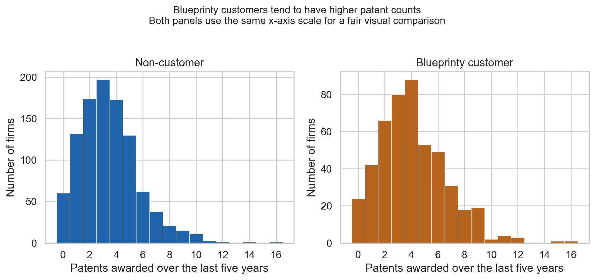
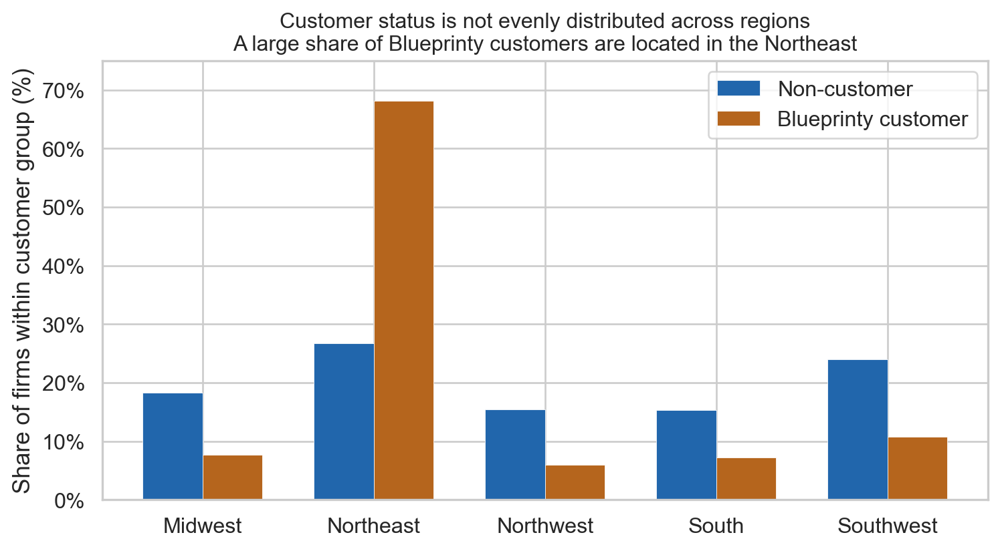
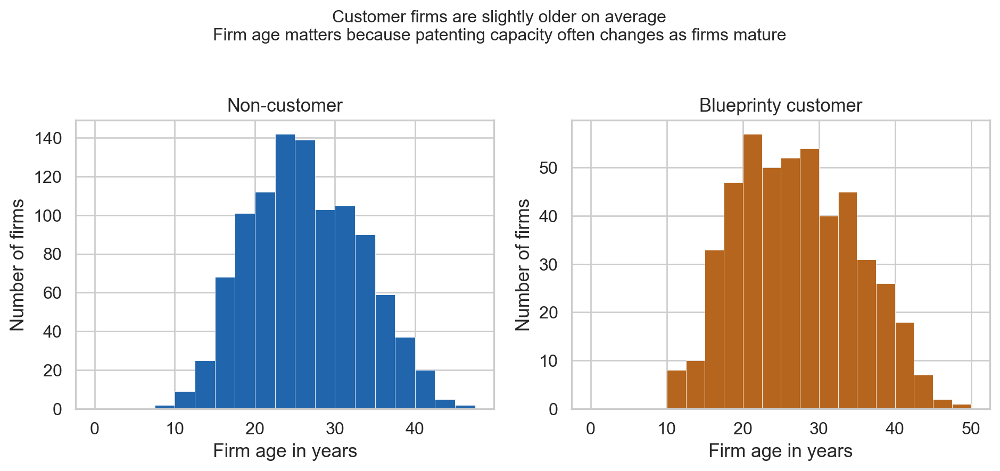
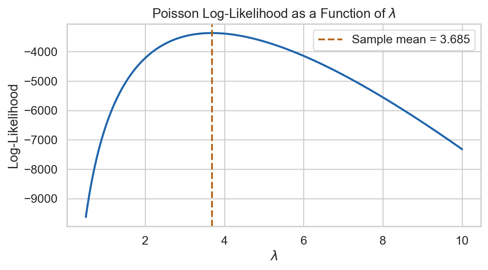
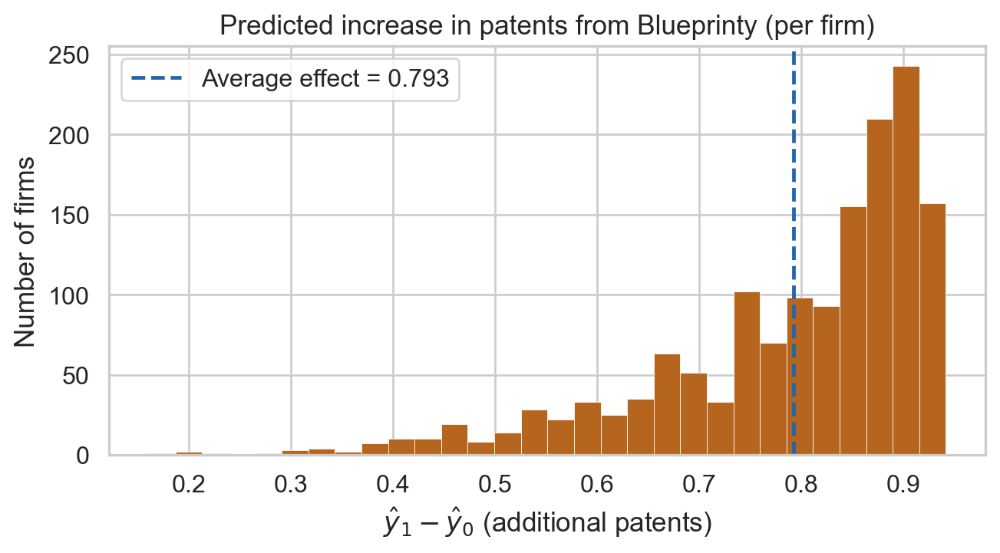

| Customer status | Firms | Mean patents | Median patents | Mean firm age | |
|---|---|---|---|---|---|
| 0 | Non-customer | 1019 | 3.47 | 3.0 | 26.1 |
| 1 | Blueprinty customer | 481 | 4.13 | 4.0 | 26.9 |
Poisson Regression and Maximum Likelihood Estimation
A Case Study of Blueprinty’s Software and Patent Awards
Introduction
Blueprinty is a software company that builds tools specifically designed for engineering firms submitting patent applications to the US Patent Office. Their marketing team wants to make a compelling claim: that firms using Blueprinty’s software are more likely to have their patent applications approved.
On the surface, testing this seems straightforward , just compare patent counts between customers and non-customers. But the ideal study would track the same firm before and after adopting the software, isolating the software’s contribution from everything else. That data doesn’t exist.
What we have instead is a cross-sectional snapshot of 1,500 mature engineering firms. For each firm, we know the number of patents awarded over the last five years, the firm’s geographic region, its age since incorporation, and whether it currently uses Blueprinty’s software. This dataset comes with a fundamental limitation: Blueprinty’s customers are not a random sample. Firms that choose to buy the software may be systematically different , perhaps more R&D-focused, more established, or concentrated in certain regions , and any of these characteristics could independently explain higher patent counts. A raw comparison between customers and non-customers would conflate the software’s effect with pre-existing differences between the two groups.
To address this, we use Poisson regression to model patent counts as a function of customer status while controlling for firm age and region. We then use the fitted model to estimate the average effect of Blueprinty’s software in a way that holds other characteristics constant.
Exploring the Data
The first question is whether customers and non-customers look different before we control for anything else. The table shows that Blueprinty customers average np.float64(4.13) patents over the five-year window, compared with np.float64(3.47) for non-customers. That raw gap is useful as a starting point, but it is not yet evidence that the software caused the difference.

The customer distribution is shifted modestly to the right. Customers are more represented around four to six patents, while non-customers have relatively more firms with lower counts. This is consistent with the marketing team’s story, but it could still be a composition story: perhaps Blueprinty sells more often to firms that were already better positioned to patent.
Are Customers Different by Region?
| Customer status | Region | Firms | Share within status | |
|---|---|---|---|---|
| 0 | Non-customer | Midwest | 187 | 18.4% |
| 1 | Non-customer | Northeast | 273 | 26.8% |
| 2 | Non-customer | Northwest | 158 | 15.5% |
| 3 | Non-customer | South | 156 | 15.3% |
| 4 | Non-customer | Southwest | 245 | 24.0% |
| 5 | Blueprinty customer | Midwest | 37 | 7.7% |
| 6 | Blueprinty customer | Northeast | 328 | 68.2% |
| 7 | Blueprinty customer | Northwest | 29 | 6.0% |
| 8 | Blueprinty customer | South | 35 | 7.3% |
| 9 | Blueprinty customer | Southwest | 52 | 10.8% |

Region is a major reason to be careful. The Northeast accounts for 68.2% of Blueprinty customers, compared with 26.8% of non-customers. If patenting norms, industry mix, legal resources, or regional innovation ecosystems differ by region, then region could confound the software comparison.
Are Customers Different by Firm Age?

The age distributions overlap heavily, but customers are slightly older on average: np.float64(26.9) years versus np.float64(26.1) years. That matters because patent output may rise as firms build research capabilities, then flatten as firms mature. The regression model below controls for both age and age squared so the customer comparison is less dependent on these visible differences.
A Simple Poisson Model via Maximum Likelihood
Patent counts are non-negative integers , a firm can receive 0, 1, 2, or more patents, but never -3 or 2.7. The Normal distribution is a poor fit for this type of outcome: it places probability mass on negative values and treats fractional counts as plausible. The Poisson distribution is the natural starting point for non-negative integer outcomes. It has a single parameter \(\lambda > 0\) that represents both the mean and variance of the distribution, and it assigns probability only to whole-number counts.
Likelihood and Log-Likelihood
For a single observation \(Y_i\) drawn from a Poisson distribution with rate \(\lambda\):
\[f(Y_i \mid \lambda) = \frac{e^{-\lambda}\lambda^{Y_i}}{Y_i!}\]
Assuming the \(n\) firms are independent, the joint likelihood is the product of their individual probabilities:
\[L(\lambda \mid \mathbf{Y}) = \prod_{i=1}^{n} \frac{e^{-\lambda}\lambda^{Y_i}}{Y_i!}\]
Taking the log (which turns the product into a sum and makes optimization easier without changing the location of the maximum):
\[\ell(\lambda) = \log L(\lambda \mid \mathbf{Y}) = \sum_{i=1}^{n} \left[ -\lambda + Y_i \log\lambda - \log(Y_i!) \right]\]
\[= -n\lambda + \log\lambda \sum_{i=1}^{n} Y_i - \sum_{i=1}^{n} \log(Y_i!)\]
The last term is a constant with respect to \(\lambda\), so it does not affect the location of the maximum.
Coding the Log-Likelihood
Code
def poisson_loglikelihood(lam, Y):
if lam <= 0:
return -np.inf
return float(np.sum(-lam + Y * np.log(lam) - gammaln(Y + 1)))Visualizing the Log-Likelihood

The curve rises to a single peak and then falls , the MLE is the value of \(\lambda\) that sits at the top. Reading off the plot, the peak aligns exactly with the sample mean (dashed line), confirming the analytical result derived below.
Analytical MLE
Taking the derivative of the log-likelihood and setting it to zero:
\[\frac{d\ell}{d\lambda} = -n + \frac{1}{\lambda}\sum_{i=1}^{n} Y_i = 0 \implies \hat{\lambda}_{\text{MLE}} = \frac{1}{n}\sum_{i=1}^{n} Y_i = \bar{Y}\]
This makes intuitive sense: the MLE for the Poisson rate is simply the sample mean, because the mean of a Poisson distribution is \(\lambda\).
Numerical MLE
Code
result_mle = optimize.minimize_scalar(
fun = lambda l: -poisson_loglikelihood(l, Y),
bounds = (0.01, 20),
method = "bounded"
)
print(f"Numerical MLE: {result_mle.x:.4f}")
print(f"Sample mean: {Y.mean():.4f}")Numerical MLE: 3.6847
Sample mean: 3.6847The numerical optimizer returns a value nearly identical to the sample mean, confirming both the analytical result and our implementation. The tiny difference is due to floating-point tolerance of the optimizer, not a modeling error.
Poisson Regression
So far we have assumed every firm shares the same patent rate \(\lambda\). That is clearly unrealistic , older firms and firms in more innovation-intensive regions are likely to hold more patents regardless of whether they use Blueprinty. To isolate the software’s effect, we need to let \(\lambda\) vary across firms as a function of their characteristics.
In Poisson regression, each firm gets its own rate:
\[Y_i \sim \text{Poisson}(\lambda_i) \qquad \text{where} \qquad \lambda_i = \exp(X_i'\beta)\]
We use the exponential as the link because \(\lambda_i\) must be positive, but the linear predictor \(X_i'\beta\) can be any real number. The exponential maps \(\mathbb{R} \to (0, \infty)\), ensuring \(\lambda_i\) stays valid. This also means the model is multiplicative: a one-unit change in a predictor multiplies the expected count by \(e^{\beta_j}\).
Updating the Log-Likelihood
Code
def poisson_regression_loglikelihood(beta, Y, X):
xb = X @ beta
return float(np.sum(-np.exp(xb) + Y * xb - gammaln(Y + 1)))Building the Design Matrix
Code
region_dummies = pd.get_dummies(blueprinty["region"], prefix="region", drop_first=False)
region_dummies = region_dummies.drop(columns=["region_Midwest"])
X_df = pd.concat([
pd.Series(1.0, index=blueprinty.index, name="intercept"),
blueprinty[["age", "age2", "iscustomer"]],
region_dummies,
], axis=1)
X = X_df.values.astype(float)
col_names = X_df.columns.tolist()
print("Design matrix columns:", col_names)Design matrix columns: ['intercept', 'age', 'age2', 'iscustomer', 'region_Northeast', 'region_Northwest', 'region_South', 'region_Southwest']We include age squared because the relationship between firm age and patent output is unlikely to be linear , there may be a peak or trough in innovation productivity at some intermediate age. We drop Midwest as the reference region to avoid perfect collinearity: including all five region dummies would make their sum equal to the intercept column, making the matrix rank-deficient. All region effects are interpreted relative to Midwest firms.
Fitting via scipy.optimize
Code
def neg_loglik(beta):
return -poisson_regression_loglikelihood(beta, Y, X)
def neg_grad(beta):
return -(X.T @ (Y - np.exp(X @ beta)))
result_reg = optimize.minimize(
fun = neg_loglik,
jac = neg_grad,
x0 = np.zeros(X.shape[1]),
method = "BFGS",
options = {"maxiter": 2000},
)
beta_hat = result_reg.x
# Analytical standard errors from the observed Fisher information
lambda_hat = np.exp(X @ beta_hat)
fisher_info = X.T @ np.diag(lambda_hat) @ X
cov_matrix = np.linalg.inv(fisher_info)
se_hat = np.sqrt(np.diag(cov_matrix))
coef_table = pd.DataFrame({
"Term": col_names,
"Estimate": beta_hat.round(4),
"Std. Error": se_hat.round(4),
})
coef_table| Term | Estimate | Std. Error | |
|---|---|---|---|
| 0 | intercept | 0.0 | 0.3074 |
| 1 | age | 0.0 | 0.0229 |
| 2 | age2 | 0.0 | 0.0004 |
| 3 | iscustomer | 0.0 | 0.0607 |
| 4 | region_Northeast | 0.0 | 0.0819 |
| 5 | region_Northwest | 0.0 | 0.0992 |
| 6 | region_South | 0.0 | 0.0985 |
| 7 | region_Southwest | 0.0 | 0.0887 |
Standard errors come from the observed Fisher information matrix \(X^\top \text{diag}(\hat\lambda) X\). Its inverse is the variance-covariance matrix of \(\hat\beta\), and the square roots of its diagonal entries are the standard errors. This is the same quantity statsmodels computes analytically.
Verification with statsmodels
Code
glm_fit = smf.glm(
formula = "patents ~ age + age2 + C(region, Treatment('Midwest')) + iscustomer",
data = blueprinty,
family = sm.families.Poisson(),
).fit()
glm_fit.summary2().tables[1][["Coef.", "Std.Err."]].round(4)| Coef. | Std.Err. | |
|---|---|---|
| Intercept | -0.5089 | 0.1832 |
| C(region, Treatment('Midwest'))[T.Northeast] | 0.0292 | 0.0436 |
| C(region, Treatment('Midwest'))[T.Northwest] | -0.0176 | 0.0538 |
| C(region, Treatment('Midwest'))[T.South] | 0.0566 | 0.0527 |
| C(region, Treatment('Midwest'))[T.Southwest] | 0.0506 | 0.0472 |
| age | 0.1486 | 0.0139 |
| age2 | -0.0030 | 0.0003 |
| iscustomer | 0.2076 | 0.0309 |
The coefficient estimates from statsmodels match our hand-coded optimizer closely, and the standard errors are nearly identical because both methods use the same analytical Fisher information. Any remaining difference is due to the numerical precision of the BFGS convergence tolerance.
Interpreting the Coefficients
The customer coefficient is positive and meaningful in magnitude, indicating that , after controlling for firm age and region , Blueprinty customers have a higher expected patent count. Because the model is multiplicative, \(e^{\hat\beta_{\text{customer}}}\) gives the factor by which expected patents are multiplied for customers vs. non-customers with identical age and region profiles.
The age and age-squared coefficients together trace a curved relationship in patent output over a firm’s lifecycle , age matters, and the effect is nonlinear.
The region indicators capture baseline differences in patent productivity across geographies, all relative to Midwest firms.
The Effect of Blueprinty’s Software
Regression coefficients in a Poisson model are not directly interpretable as “additional patents” because the model is multiplicative. To translate the customer coefficient into a concrete, actionable number, we use a counterfactual prediction approach.
We create two copies of the data:
- \(X_0\): every firm’s
iscustomerflag is set to 0 (no one uses Blueprinty) - \(X_1\): every firm’s
iscustomerflag is set to 1 (everyone uses Blueprinty)
Everything else , age, region , stays at each firm’s actual observed value. We then predict expected patent counts under each scenario and compute the average difference.
Code
data0 = blueprinty.copy(); data0["iscustomer"] = 0
data1 = blueprinty.copy(); data1["iscustomer"] = 1
yhat0 = glm_fit.predict(data0)
yhat1 = glm_fit.predict(data1)
avg_effect = float((yhat1 - yhat0).mean())
print(f"Estimated average effect of Blueprinty software: {avg_effect:.3f} additional patents")Estimated average effect of Blueprinty software: 0.793 additional patents
On average, Blueprinty customers are predicted to receive approximately 0.79 additional patents over a five-year period compared to what they would have received without the software, holding firm age and region constant.
What this analysis does and does not establish. The Poisson regression controls for the observable differences between customers and non-customers (age and region), and the estimated effect is consistent with Blueprinty’s marketing claim. However, this is an observational study , firms self-select into using the software. Unobserved factors, such as a firm’s internal R&D budget, the quality of its patent attorneys, or how strategically it pursues patents, could differ systematically between customers and non-customers and could also drive patent counts. Without randomized assignment to Blueprinty, we cannot rule out this residual confounding. The analysis provides suggestive evidence in favor of the software’s effectiveness, but should not be interpreted as a causal estimate.